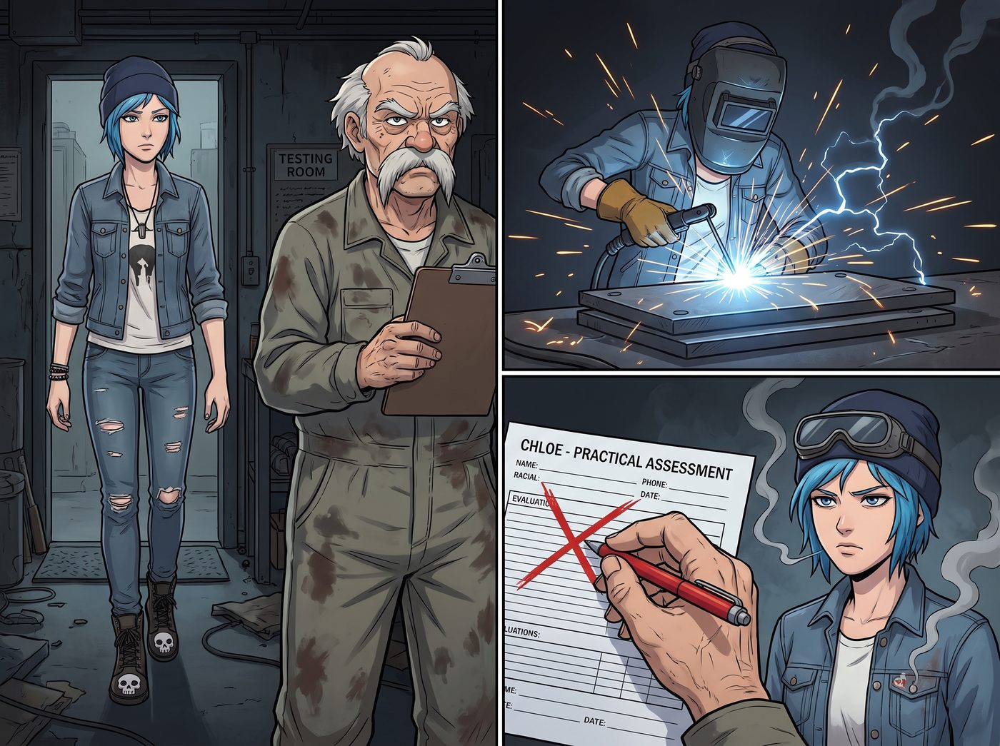

主動喊停的絞殺

自從以驚人的速度提早刷完波特蘭社區學院的汽修與金工兩年制副學士學位後，二號車廂的常規修理工作已經無法滿足 Chloe 體內那股狂躁的創造與破壞慾了。
為了能在工坊裡合法購買工業級等離子切割機、高爆熱熔劑，以及把那台破皮卡改裝成能硬扛末日沙塵暴的裝甲車，Chloe 報名了華盛頓州勞工與工業部的A級重型拆除與特種結構焊接執照考核。
當然，實習生 Lily 堅持要以首席法務與安全顧問的身分陪考。
一、帶著偏見的考官
考場位於西雅圖郊區一個充滿鐵鏽與機油味的重工業考評中心。主考官 Hank 是一個留著海象鬍鬚、脾氣暴躁的傳統工業老白男。從 Chloe 走進考場的那一刻起，Hank 就對她那頭藍髮、破洞牛仔褲以及印著骷髏頭的鋼頭工作靴充滿了偏見。
在實操環節，Chloe 完美地用電焊將兩塊厚達兩英吋的工業鋼板無縫熔接，火花四濺中展現了無可挑剔的街頭手藝。
但當她摘下護目鏡時，Hank 卻在考核表上重重地畫了一個叉。
「銲接強度勉強及格，但安全意識零分。」Hank 輕蔑地用筆敲著寫字板，「妳的防火夾克上掛著太多金屬鉚釘，這是潛在的導電與導熱風險。我不能給一個把重工業當成龐克搖滾派對的小太妹發執照。三個月後再來重考吧。」
二、懸停在發送鍵上的核打擊
Chloe 氣得差點把手裡的焊槍砸在 Hank 的臉上。但還沒等她爆發，身後傳來了檔案夾打開的清脆聲音。
「主考官先生，您剛才的評分行為，在法律上被稱為基於主觀審美偏見的歧視性行政裁量。」
Lily 穿著與重工業考場極不搭調的粉色碎花裙，推了推反光的圓框眼鏡，幽靈般地出現在 Hank 面前。她手裡那台軍規級平板電腦上，已經密密麻麻地羅列了考評中心的違規證據。
「根據聯邦法規第29篇職業安全健康標準，」Lily 的聲音軟糯卻字字如刀，「Price 學姐的鉚釘夾克完全符合阻燃標準。相反地，我剛才測試了貴考場的排風系統。您頭頂那個生鏽的通風管，一氧化碳與錳煙塵的排放濃度超過了國家職業安全健康研究所法定上限的百分之四百。」
Hank 愣住了，大鬍子抖動了兩下：「小姑娘，妳在胡說八道些什麼……」
Lily 根本不理他，大眼睛裡閃爍著將對手合法埋葬的狂熱光芒，手指在鍵盤上飛速敲擊。
「我不僅要向州人權委員會舉報您違反民權法案第七章的性別與次文化歧視，我還剛剛連線了環保署。如果我按下這個發送鍵，一支由防化部隊和聯邦調查員組成的聯合執法小組，將在半小時內查封這座充滿有毒致癌氣體的違章建築。您的退休金、這家考評中心的州政府撥款，都將在天價罰單中灰飛煙滅。」
三、飛撲而來的制止
看著實習生指尖懸停在發送鍵上，Hank 嚇得臉色慘白，連手裡的寫字板都掉在了地上。
但就在這個足以毀滅考官人生的行政核打擊即將落下的瞬間，Chloe 爆發出了超越常人的敏捷。
她一個飛撲，從後面死死地抱住了 Lily，一隻手緊緊捂住實習生的嘴，另一隻手拼命將那台平板電腦按回待機狀態。
「唔唔唔——」Lily 在 Chloe 懷裡無辜地掙扎著，發出模糊的抗議聲，意思大概是「Price 學姐，放開我，這是一次完美的合法收購機會！」
「不！不要發送！Lily 妳這瘋子，給我冷靜下來！」Chloe 滿頭大汗地朝著實習生大吼，「我只是想考個牌照去買等離子切割機！我不想把這家考評中心搞破產！我也不想因為接收這塊有毒的破地皮而牽扯進十年的環境清理訴訟裡！給我把妳的聯邦法規塞回腦袋裡！」
街頭霸王轉過頭，用一種近乎哀求的眼神看著已經嚇傻的主考官 Hank：「聽著，老兄！快把及格章給我蓋上！我現在快按不住她了！如果她掙脫了，明天你就會因為跨州環境恐怖主義而登上報紙頭版！」
Hank 哪裡還敢有半點刁難，他像看見了死神一樣，手忙腳亂地從地上撿起印章，在 Chloe 的執照申請表上瘋狂地蓋下了三個鮮紅的 PASS，然後雙手顫抖著遞了過去。
「拿走！拿走妳的執照！上帝啊，帶著這個穿粉色裙子的惡魔離開我的考場！」Hank 崩潰地喊道。
四、比熔接十噸鋼材還累
五分鐘後，Chloe 滿頭大汗地把 Lily 拖出了考評中心，手裡緊緊攥著那張 A 級特種拆除與銲接執照。
「Price 學姐，您的妥協在博弈論上是不理智的。」Lily 整理了一下被弄亂的裙擺，有些惋惜地嘆了口氣，「我們明明可以合法沒收他的考場，然後改造成我們自己的私人重型機械測試基地的。」
「聽著，實習生。」Chloe 疲憊地靠在皮卡車門上，看著手裡的執照，覺得自己剛才消耗的體力比銲接十噸鋼材還要多，「在工坊裡，破壞一台發動機只需要一把大錘；但跟妳出來，我卻要拼盡全力去阻止妳用幾行字毀掉一個人的下半輩子。以後我去考任何執照，妳，給我，老老實實待在車廂裡陪 Kate 烤餅乾！」
這場考試讓 Chloe 深刻地意識到，拿著執照去破壞物理世界，遠遠沒有實習生拿著法規去摧毀社會結構來得恐怖。她現在只想趕緊買到切割機，回車廂去切幾塊鋼板壓壓驚。